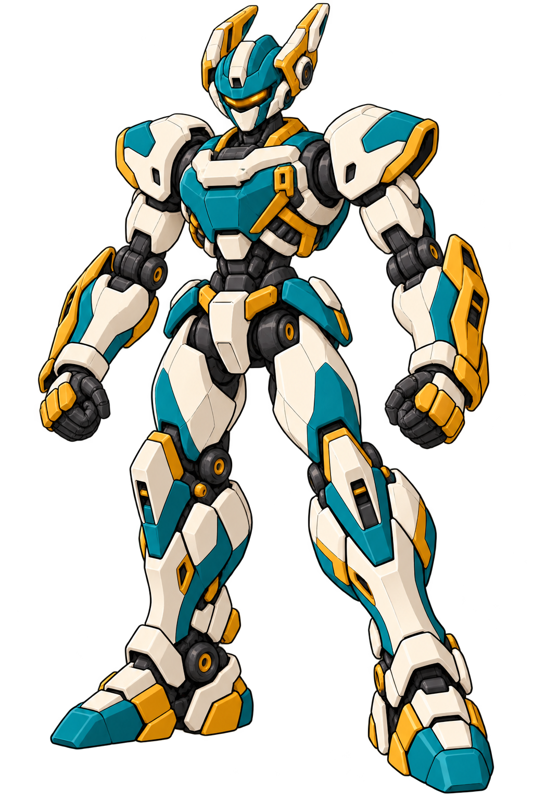

历史候选 · R4长耳头冠已被用户否定
此头型停用。当前改为六种头部参考，请勿从本页长耳头型继续派生。馆守Z沿用现有，不重做。
无牌：保留体术机的运动感，补足自己的识别特征
社勇王与六名角色的固定设计已集中交给“战斗主玩法打磨”。本页开始原交接顺序的下一组；无牌R4仅是候选，尚未发送、进入游戏或加入上一批固定图集。



这次实际改了什么
- 头部增加阶梯折角冠片，从两侧抬起后扫；保留琥珀传感窗与闭合面罩。
- 胸部增加象牙白横桥，以及单侧锁扣和斜撑，与原来平整青绿胸壳拉开。
- 拳背和前臂增加赭金护片、击打护轨，继续服务天冲拳与体术；不借用社勇王的巨拳比例。
- 保留白、青绿、赭金色系及关节/转腰，不统一成社勇王的橙白，也不改成工业重机。
作者判断：识别性增加了，冠片仍值得看
完整原图已查看：四肢、拳、踝和脚可读，头胸轮廓比v3明确。两片冠比较长，仍有明显“双耳”倾向；这里保留具体提案，等方向判断后再修，不先批量展开正侧背和动作。
本图不是同模型投影，也没有证明正常战棋镜头下的可读性、绑定净空或动作表现。透明通道已实际读取，角点和所查背景点透明；边缘、裁切与运行材质仍要在派生时检查。
实际来源、校验与作者观察 · 实际生图提示及两张参考的用途 · 沿用的当前批次记录
下一步的分工
主玩法负责固定源的模型接入、巢口/设施与运行验证；本会话继续独立美术设计。无牌方向确定后再派生，馆守Z按最新用户决定沿用现有，已从重做队列移除。明显改造型先作设计决定，不替用户确认。